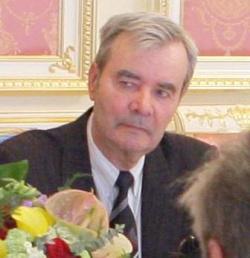
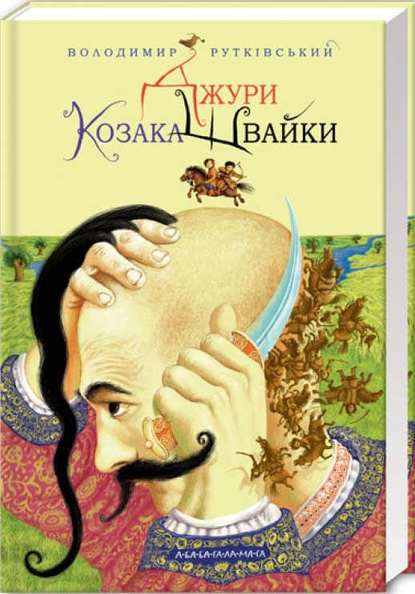

Усі ми знаємо імена Северина Наливайка, Богдана Хмельницького, Івана Мазепи. А ким були найперші козаки? Звідкіля вони взялися? На ці запитання ми знайдемо відповідь у новому гостросюжетному історичному романі Володимира Рутківського — одного з найблискучіших сучасних українських дитячих письменників.
Його дивовижні герої — Грицик та малий волхв Санько, юний богатир Демко Дурна Сила, його мама-велетка, невловимий козак Швайка зі своїм вірним вовком Барвінком та їхні численні друзі — з честю виходять із найскладніших ситуацій.
Головні герої роману — підлітки Грицик, малий волхв Санько й богатир Демко Дурна Сила, які потрапляють у різноманітні пригоди та долають перешкоди разом. У процесі в них виявляються надприродні здібності, якими ще потрібно навчитися користуватися. Володимир Рутківський з великою любов’ю описує Україну п’ятнадцятого століття, той час, коли почало формуватися козацтво.
Це один із небагатьох творів українських письменників про козаків, що будуть корисними для знання історії того часу. Діти побачать, що козаки та представники інших соціальних груп — це не якісь абстрактні категорії, а справжні люди зі своїм життям і почуттями, що нічим не відрізняються від наших, сучасних. Сюжет розвивається динамічно та тримає в постійній напрузі, крім того, у школярів буде чудовий привід збагатити свій словниковий запас архаїзмами та фразеологізмами, які обов’язково стануть у пригоді.
«По-татарському «козак» – це вільна людина, котрій і сам чорт не брат. Хоче – звіра полює, хоче – візьметься за шаблюку і йде на ногайця», – Рутківський.
У центрі твору – пригоди двох друзів, Санька та Грицика, які змушені були негайно тікати з рідної Воронівки. На їхньому шляху трапляється безліч небезпечних і таємничих пригод. Вони зустрічаються з легендарним козаком-характерником Швайкою, стають його джурами, тобто помічниками, зброєносцями. Характерниками називали козаків, які володіли надприродними здібностями. В романі вживається багато спеціальних термінів, які краще характеризують описувану епоху. Трохи містики й чаклування роблять твір більш цікавим і привабливим. А виразність народної мови – прислів`я, приказки, народні вислови, жарти та фразеологізми – більш яскравим.
ПочатокВолодимир Рутківський
Володимир Рутківський — народився 18 квітня 1937 року у с. Хрестителеве, що на Черкащині. Ще у шкільні роки він виявив неабиякі здібності до історії й навіть очолював археологічний гурток, який існував при школі. Після закінчення школи поступив до Одеського політехнічного інституту. Перші твори майбутнього автора вийшли друком у 1959 році.
ПочатокДжури козака Швайки
Частина перша. СМЕРТЬ ГАФУРА-АГИ
(березень 1487 року)
— Лети, Вітрику, — знеможено прохрипів вершник. — Тепер або пан, або пропав…
Кошлатий кінь скосив на вершника налите безмежною втомою око. З вудил зривалися клапті рожевої піни. Вже котрий день
майже без відпочинку скаче Вітрик. Аж з за самісінької Ворскли, відтоді, як господар відволік на себе увагу великого
сторожового загону татар ногайців. Тоді, правда, у нього був ще один кінь, такий самий кошлатий і швидкий. Та вчора
пополудні наздогнала його татарська стріла… Тоді ж було поранено й господаря.
— Давай, Вітрику, — з зусиллям шепотів вершник. — Давай, друже…
Йому було зле. Пекучий біль забивав свідомість. Час від часу вершника хилило то в один, то в інший бік. Та все ж він
знаходив у собі сили підводитись і навіть озиратися назад, хоча перед очима стояв такий туман, що годі було щось
розгледіти. Ліва вершникова рука безсило звисала уздовж тіла. Одежа набрякла від крові.
Праворуч тягнувся неозорий степ, рудий від торішньої трави і рівний, мов стіл. Від пильного татарського ока в ньому й миша не сховається. Тож залишилася єдина надія — на вірного Вітрика. Але ж чи довго витримає він таку гонитву?
Щоправда, незабаром мають з’явитися перші присульські байраки. Але навряд чи й вони зможуть надати безпечний сховок. Не
тому, що малі, а тому, що слідів з собою не забереш. А по свіжих слідах кляті ординці будь кого розшукають. З-під землі
витягнуть.
Проте іншого виходу немає. Треба спробувати.
— До Барвінка, Вітрику, — вичавив з себе вершник. — Десь тут я наказав йому зачекати… До Барвінка!
У відповідь Вітрик хитнув головою. До Барвінка — то означало забратися в такі нетрі, де й розвернутися важко. Проте
можна було бодай хвилю перепочити…
Посередині летів сам Гафур-ага, дебелий, сивуватий татарин зі шрамом через щоку. Він не зводив з утікача пильного погляду. Стріляти в нього він заборонив ще зранку: і так було ясно — нікуди цей невірний не втече.
Час від часу на вуста Гафур-аги набігала зловтішна посмішка. Надто вже впікся цей уруський розбійник, цей невловний козак ординцям, аби здобути його мертвим. Ні, він потрібен був живий, аби шкіру з нього здерти, посадити на палю посеред улусу — хай усі побачать, що чекає на того, хто завдає лиха ординській державі!
А цей завдав лиха чи не найбільше. Звідкілясь дізнавався про час та напрямок татарського набігу на уруські села і попереджав своїх гяурів. З усіх уруських вивідників був чи не найвсюдисущіший і найневловиміший. То його сліди зринали біля дніпровського острова Хортиці, Очакова, а то й у самій Кафі — серці непереможного Криму. Скільки разів на нього влаштовували засідки і ставили пастки, скільки кінних загонів розсипалося через нього по неосяжних ординських степах — і все на марне. Вислизав він, як хитрий змій. Прокрадався, неначе вовк. Або перевертень, що приймав будь яку подобу.
А втікача, за яким оце зараз женеться він, Гафур-ага, зовуть Швайкою. Мовляв, штрикає ординців, мов швайка. Про це
надійний чоловік з урусів доніс. Він же і вказав, якою приблизно дорогою мав повертатися цей Швайка від Перекопу до
свого повелителя, переяславського старости…
Похитнувся, захрипів знеможений кінь. Пронизливо вереснув Гафур-ага, на ходу перескочив на іншого і знову погнав услід
за втікачем. Добрячий кінь у цього уруса! Вже третіх міняють татари — а наздогнати не можуть. Коли усе ж полонять цього
Швайку (в чому Гафур-ага вже не мав ані найменшого сумніву), то коня його забере собі. Звісно, на такому перед турецьким
султаном не погарцюєш, проте в поході про кращого годі й мріяти.
А Швайку таки спіймають. Бо вчора ще поранено його було, і крові, либонь, не один кухоль втратив. От лише б устигнути
схопити Швайку до заходу сонця — і вся слава належатиме йому, Гафур-азі!
Зненацька втікачів кінь почав забирати убік, майже назустріч правому крилу. Гафур-ага вражено закліпав очима: здурів той
Швайка, чи що? Сам у полон напрошується. Та ні, скидалося на те, що невірний уже не в змозі правити конем — он як схилив
голову на кінську гриву, то й підвести її не може.
Проте на відстані польоту татарської стріли кінь Швайки знову вирівняв свій біг. І лише тепер розуміє Гафур-ага, у чому
річ: попереду забовваніла діброва.
— Не випускайте його! — заволав він до свого правого крила. — Обходьте!
Зрозуміли агу. Заходили канчуки по змилених кінських крупах. З останніх сил рвонули татарські бахматки вперед. Проте
кінь Швайки, діставшись діброви, щез за першими деревами.
— Обходьте діброву! Не випускайте його! — знову заволав Гафур-ага до свого правого крила, а сам кинувся по сліду. Гарні
сліди, чіткі. Таких лишень сліпий не розгледить. Попереду аги летіли двійко випробуваних охоронців — Мустем та Мустафа.
Ці вже знають, що робити, не випустять невірного. Згинуть, та не випустять. А втім, чому вони мають гинути? Того Швайку
зараз можна взяти голими руками, як безпомічну перепілку. І це зробить він, Гафур-ага. Сам, своїми руками…
Різко вихопився Гафур-ага вперед. Обігнав Мустема, обійшов Мустафу. Попереду один закрут лісової стежини, другий…
Гафур-ага низько прихилив голову до кінської гриви, аби вберегтися від гілок. Десь неподалік ніби форкнув кінь.
Гафур-ага посміхнувся: не інакше, як того гяура Швайки. Рука сама потяглася до аркана. Ще через мить до нього долинув
тихий, переривчастий свист.
[...]
Розширеними від жаху очима дивилися татари на [...] величезні вовчі сліди, що чітко відкарбувалися на
багнистому чорноземі. Вони чули, що невірні можуть перетворюватися на вовків. Але щоб у них на очах уруський вовкулака
розтерзав безстрашного старого воїна!
Такого на їхній пам’яті ще не було.
Хтось із татар нажахано зойкнув і почав розвертати коня. Подалі, подалі від цього місця, де за деревами причаївся
потворний перевертень і от-от запустить в горлянку свої страхітливі вовчі ікла!
За першим втікачем з голосним вереском сипонула решта. А за хвилю годі вже було зрозуміти, де у татарів ліве крило, а де
праве.
А коли кінський тупіт розтанув у березневому надвечір’ї, з протилежного боку діброви вийшов знеможений Вітрик. Він
прошкував до старого воронівського городища, що зводилось віддалік над стрімким урвищем.
На Вітрикові, прихиливши голову до розкошланої гриви, лежав непритомний Швайка.